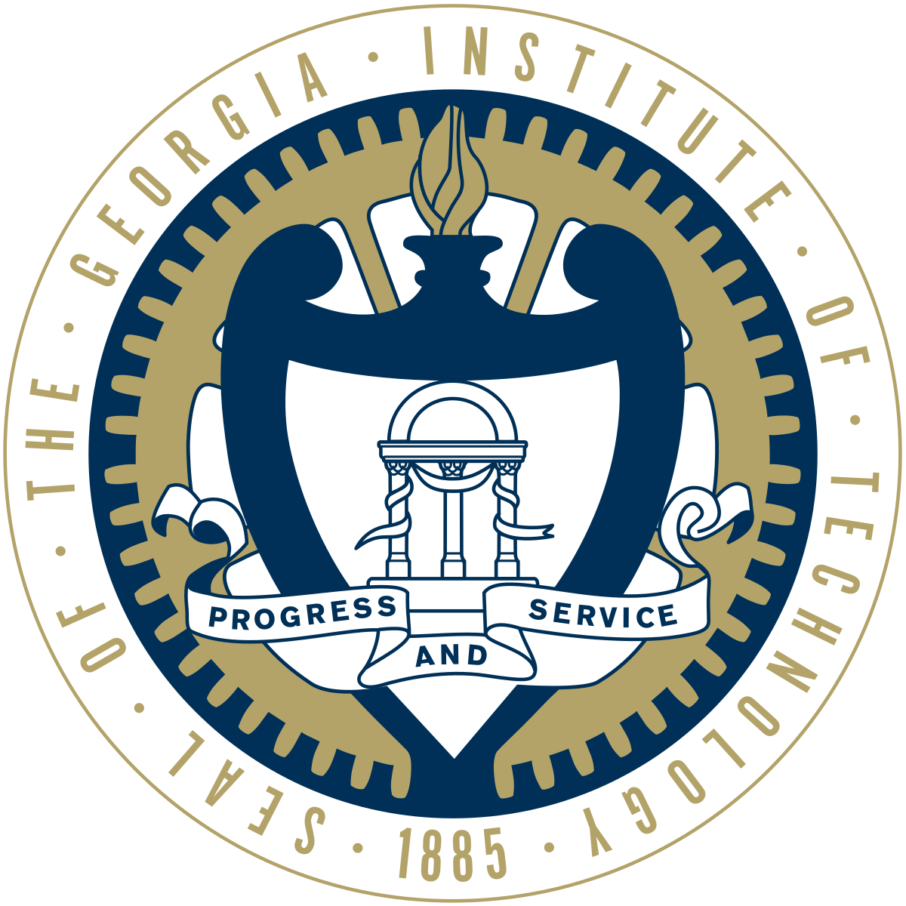

Che-Kai Liu
Ph.D. Student @ GaTech ECE
Email: che-kai@gatech.edu
Focus: VLSI and Computer Architecture.
About Me
Hello, I am a 1st year Ph.D. student advised by Professor Arijit Raychowdhury at the Integrated Circuits and Systems Research Lab, School of Electrical and Computer Engineering, Georgia Institute of Technology, GA, USA, where my research interests primarily straddle analog/mix-signal (AMS) in-memory VLSI and architecture for next-generation applications.
-
Algorithm & Architecture
[DATE24a][DATE23][MLSys'23(W)] -
Circuit & Memory
[DATE24b][ICCAD23][ICCAD22]
Work Experience

Graduate Research Assistant
Georgia Institute of Technology @ GA, USA
Advisor: Arijit Raychowdhury
Integrated Circuits & Systems Research Lab, School of ECE
Aug. 2023 - Present
Georgia Institute of Technology @ GA, USA
Advisor: Arijit Raychowdhury
Integrated Circuits & Systems Research Lab, School of ECE
Aug. 2023 - Present
Achievement
Selected Awards
-
Finalist, ACM Student Research Competition
ACM, June, 2023 -
Outstanding Undergraduate Thesis Award
Zhejiang University, June, 2023 -
First Place, ACM Student Research Competition
ACM/IEEE ICCAD, Nov, 2022 -
Best Presentation @ EIC workshop, ACM/IEEE ESWEEK
ACM/IEEE ESWEEK, Oct, 2022 -
Research Scholarships
University of Notre Dame, Jan, 2022 -
Merit Scholarships in the College of Information Science & Electronics Engineering
Zhejiang University, 2020, 2021, 2022
Talks (Exlude Conferences & Workshops)
-
When Vector Symbolic Architecture meets Compute-in-Memory
ICSR Lab, School of ECE, Georgia Institute of Technology, Virtual May, 2023 -
Compute-in-Memory: A Cross-layer Perspective
BIAS Lab, Department of CS, University of California Irvine, USA Oct, 2022
Peer-reviewed Publications. *Equal Contributions
-
H3DFact: Heterogeneous 3D Integrated CIM for Factorization with Holographic Perceptual Representations
Z. Wan*, C.-K. Liu*, M. Ibrahim, H. Yang, S. Spetalnick, T. Krishna, A. Raychowdhury
2024 ACM/IEEE Design Automation and Test in Europe (DATE), Valencia, Spain -
FeReX: A Reconfigurable Design of Multi-bit Ferroelectric Compute-in-Memory for Nearest Neighbor Search
Z. Xu, C.-K. Liu, C. Li, R. Mao, J. Yang, T. K ̈ampfe, M. Imani, C. Li, C. Zhuo and X. Yin
2024 ACM/IEEE Design Automation and Test in Europe (DATE), Valencia, Spain -
SEE-MCAM: A Scalable Multi-bit FeFET Content Addressable Memory for Energy Efficient Associative Search
S. Shou, C.-K. Liu, S. Yun, Z. Wan, K. Ni, M. Imani, X. S. Hu, J. Yang, C. Zhuo, X. Yin
2023 IEEE/ACM International Conference on Computer-aided Design (ICCAD), San Francisco, CA, USA -
Towards Cognitive AI System: A Survey and Prospective on Neuro-symbolic AI
Z. Wan, C.-K. Liu*, H. Yang*, C. Li*, H. You*, Y. Fu, C. Wan, T. Krishna, Y. C. Lin, A. Raychowdhury
2023 Systems for Next-Gen AI Paradigms Workshop, MLSys, Miami, Florida, USA -
HDGIM: Hyperdimensional Genome Sequence Matching on Unreliable Highly-Scaled FeFET
H. E. Barkam, S. Yun, P. R. Genssler, Z. Zou, C.-K. Liu, H. Amrouch, M. Imani
2023 IEEE/ACM Design Automation and Test in Europe (DATE), Antwerp, Belgium -
Cosime: Fefet based Associative Memory for In-memory Cosine Similarity Search
C.-K. Liu, H. Chen, M. Imani, K. Ni, A. Kazemi, A. F. Laguna, M. Niemier, X. S. Hu, Z. Liang, C. Zhuo, X. Yin
2022 IEEE/ACM International Conference on Computer-aided Design (ICCAD), San Diego, CA, USA
Service
- 2024 IEEE ISCAS Paper Reviewer
- 2023 ACM JATS Paper Reviewer
- 2023 IEEE JETCAS Paper Reviewer
- 2022 IEEE JETCAS Paper Reviewer
Education

Georgia Institute of Technology
Ph.D. Student, Electrical and Computer Engineering
July 2023 - Present
Ph.D. Student, Electrical and Computer Engineering
July 2023 - Present
Zhejiang University
B.Eng., Electronics Engineering
Aug 2019 - June 2023
B.Eng., Electronics Engineering
Aug 2019 - June 2023
References
-
Dr. Arijit Raychowdhury
Steve W. Chaddick ECE School Chair, Professor in School of Electrical and Computer Engineering
Georgia Institute of Technology, GA, USA
Relation: Ph.D. Advisor (Mar. 2023 ~ Present) -
Dr. X. Sharon Hu
Professor in Department of Computer Science and Engineering
University of Notre Dame, IN, USA
Relation: Research Advisor (Apr. 2022 ~ Mar. 2023) -
Dr. Mohsen Imani
Assistant Professor in Department of Information and Computer Science
University of California Irvine, CA, USA
Relation: Research Advisor (Sep. 2022 ~ Jan. 2023)